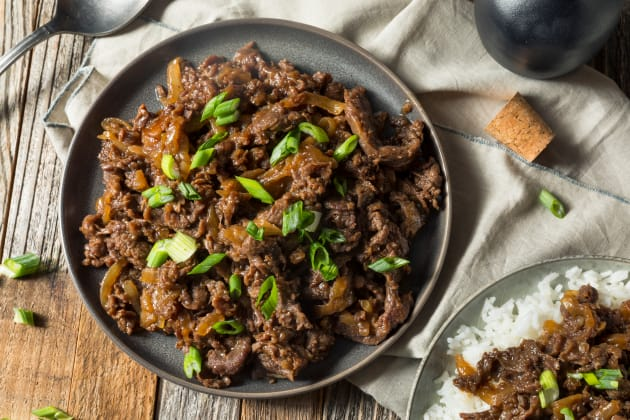
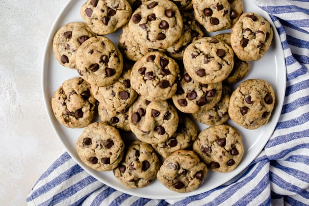

Welcome to my site, and please take your time.
Amazing! If you haven't thought gourmet kitchen will leave you hungry, think again. You should skip several meals before visiting this restaurant. Everything is packed with taste, you cannot resist from having all of the dishes and licking the plate.
 It’s an amazing experience. The ambiance is very welcoming and charming. Amazing wines, food and service. Staff are extremely knowledgeable and make great recommendations.
Visit this lovely restaurant in Umhlanga. The service is unmatched. The staff truly cares about your experience. The food is amazing – everything I tasted melted in my mouth. Absolutely the best meal I had while in Umhlanga.
This place has a great Atmosphere is chilled and relaxing but the staff is also really friendly. They know what they’re doing and what they’re talking about, and you can tell making the customers happy is their top priority. Foods pretty good, some classics and some twists, and for their prices it’s 100% worth it.
You want traditional food? You want a place that makes you sit and wait a while and forces you to have a conversation with one another as your pizza is cooked to perfection. You want a place that makes you feel cozy and not feel stressed about what you have to wear? Debonairs is one of the original pizza places in Randburg keeping the tradition on what it means to be African, Amarican or Asian. This place makes you feel like family. Don’t be afraid to order something other than the bsics because whatever you order will be on marvelous.